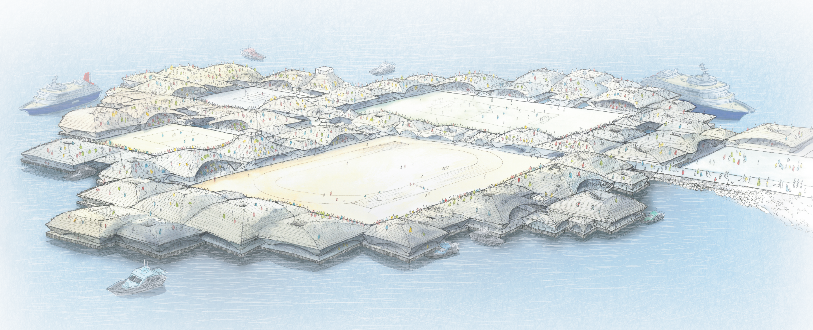

二上匠太郎 -TOP
design
一覧（all project）
建築（architecture）
製品（product）
図表（graphic）
企画（event）
research
一覧（all project）
論文（treatise）
執筆（writing）
書籍（book）
about
contact
design
research
works
about
contact

オリンピック島（2021）
人類がオリンピックを諦めないための海上移動建築群の提案
WINE SCAPE IN JAPAN（2022）
山梨県甲府市をフィールドとして、ブドウ畑とワイナリー建築を環境シミュレーションによって横断的に設計する提案
Rasing and Braiding（2022）
セネガルをフィールドとして、女性や子どもの力だけで自力建設可能な空間と工法の提案
太陽と水の小学校（2020）
太陽の動きと連動して教室を配置した、遊水地と隣接した地元の小学校の設計提案
砺波散村の発生要因と持続要因の研究（2020）
卒業論文
近代日本-建築史（2024）
近代的構造材への仕方からみる、国家・都市・村落における創造的適応としての近代化受容80年の研究（修士論文）
別邸出版（2025）
各種グラフィックのデザインと展示用什器の設計
ニュース
more